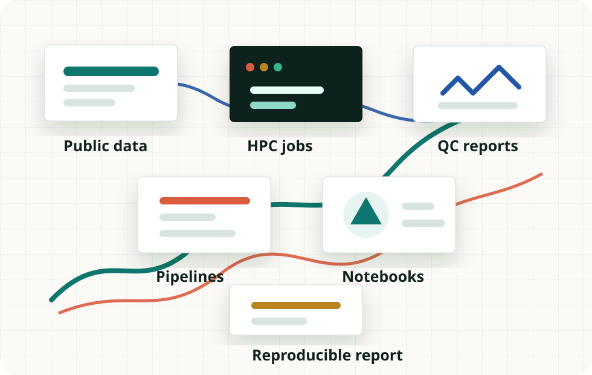

Reproducibility
Keep commands, versions, sample IDs, parameters, input sources, small config files, and expected outputs visible.
Tufts University - Department of Biology
A hands-on course hub for reproducible analysis, real sequencing datasets, HPC workflows, containers, Nextflow and nf-core, notebooks, and critical evaluation of bioinformatics results.
Lab Repository
This site complements the GitHub repository used in class. The repository is where weekly Markdown labs, sample sheets, environment files, small configuration files, and notebook templates can live. Course policies, grading, due dates, and official requirements remain governed by the current official syllabus.
git clone <repository-url>
cd <repository-name>
git pullAvailable Now
Open these Markdown labs in GitHub during class. They are organized for reading, copying commands, checking expected outputs, and revisiting answers after trying each question.
Reproducible Practice
Labs are designed around visible inputs, explicit parameters, inspectable quality control, and notebooks that connect computation to interpretation.

Weekly Map
The course moves from core computing skills into complete workflows for genomics, transcriptomics, chromatin accessibility, single-cell analysis, microbiome and metagenomics, and a final reproduction project.
Working Standards
Keep commands, versions, sample IDs, parameters, input sources, small config files, and expected outputs visible.
Pull before class, commit your own work clearly, and organize final project repositories so another group could rerun the analysis.
Use login nodes for light work, submit compute jobs through the scheduler, and follow course guidance for storage and job scripts.
Prefer conda or mamba environment files and record any package changes needed for an assignment or project.
Record image names, tags, bind mounts, and runtime options so a workflow can be rerun with the same assumptions.
Preserve sample sheets, parameter files, configuration files, logs, and reports from workflow runs.
Make notebooks run from top to bottom, explain major choices, label outputs, and interpret results rather than only showing code.
Treat successful execution as the start of interpretation, not proof that the result is correct.
Responsible AI Use